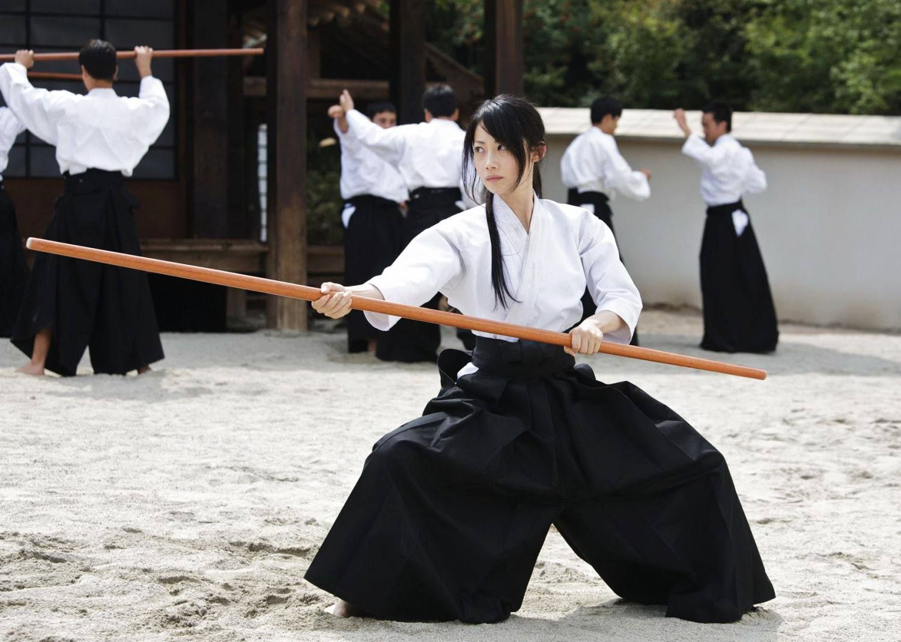

¿De donde vienen?
En todas las Artes Marciales existen métodos para evaluar a sus practicantes y distinguirse unos de otros en función del nivel que tenga cada uno. La forma más común es un examen en el que el aspirante al siguiente grado tiene que demostrar las habilidades adquiridas en el entrenamiento.
En el caso de las Artes Marciales japonesas, al ascender a otro nivel, el practicante se distingue entre sus compañeros (además de por sus habilidades) por el color de su cinturón, aunque esto no ocurre en todas ellas.
Todo apunta a que Jigoro Kano, el fundador del Judo, estableció un sistema de grados para evaluar el progreso de sus alumnos: los grados Kyu y los grados Dan. Para pasar de un grado a otro, el practicante tenía que realizar una serie de movimientos y técnicas de acuerdo al nivel al que aspiraba. Una vez superado, era poseedor de un grado Kyu superior.
Más adelante, el Maestro de Judo Mikonosuke Kawaishi, estableció el sistema de colores en los cinturones de los kimonos, según el grado Kyu.
Pues bien, el Aikido (y otras Artes Marciales) tomó ese método de evaluación de cinturones y grados, tal y como lo conocemos hoy en día.